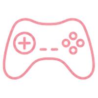
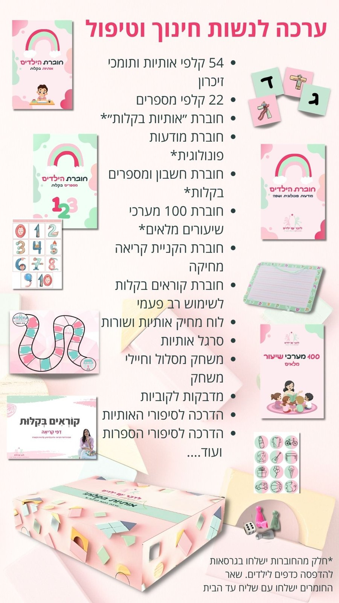

מה כלול בתוכנית?
הדרכות מקצועיות שיעזרו לך לקדם כל ילד שמגיע אלייך ולבנות את התדמית המקצועית שלך מול ההורים

הדרכות עסקיות ושיווקיות שיעזרו לך למלא את קבוצות הלמידה שלך

משחקים וסרטונים לתלמידים שישמשו אותם בשיעורים ויגבירו את ההנאה בלמידה של הילדים כדי שהם רק יחכו לשיעור הבא
תעודת הכשרה בהקניית מיומנויות הכנה לכיתה א' וקריאה
ערכת יציאה לדרך מלאה הכוללת
- חוברת מערכי שיעור מלאים הכוללים הקנייה ותרגול בפרטני או בקבוצה
- קלפי תומכי הזיכרון למספרים, לאותיות ולסימני הניקוד
- סרגל אותיות ומספרים
- שקפים להקניית ניקוד וקריאה עם תומכי זיכרון
- מאגר דפי עבודה לילדים לכל שלב ולכל רמה
